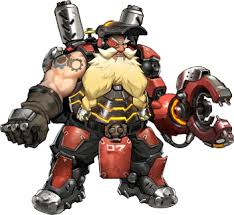

Bastion is an attack robot that is fascinated by nature. Bastion has 200 health and 100 armor and has three abilities: ironclad, reconfigure, and self-repair. Bastion's reconfiguration ability lets him go into sentry mode and back into his recon mode. It takes 1 second to configure into sentry mode and takes 0.5 seconds to configure into the recon mode. Bastion's ironclad ability lets him take 20% less damage while in the sentry configuration. His last known ability is his self-repair, which heals 75hp per second and has a duration of 4 seconds as long as you hold down the button. It takes 1 seconds to cooldown or when the self-repair is used all the way it takes 7 seconds to cooldown. . Bastion's ultimate ability is called Tank configuration. Even though this is a configuration he does not take 20% less damage but gives him more health and each shot does 205 damage with a direct hit and can do 35 damage to himself. Bastions recon blaster does 6-20 damage and has 25 bullets. His sentry configuration has 300 bullets and does 4-15 damage, but he cannot get headshots while in his sentry mode.

Hanzo brother of Genji and which he has killed. Hanzo has 200 health, wields a bow and has 3 abilites: scatter arrows, sonar arrow, and wall climb. Hanzo's scatter arrows do 22 per arrow uncharged and 75 damage per arrow while fully charged. There are 6 arrows that come out and cannot headshot with the arrows that come out. This ability has a 10 seconds cooldown and the scatter arrows come from the initial arrow then split which can bounce off walls. Hanzo's sonar arrow lets teamates and you see enemies in a 10 meter radius and does 125 damage fully charged and 29 damage uncharge, but has a 20 second cooldown. Hanzo's wall climb ability, the same as Genji's, lets him get to higher places. Hanzo's ultimate ability is called DragonStike and does 125 damage with the arrow and does 200 damage per second with anyone standing in the dragons. Hanzo's only weapon is a bow and when fully charged does 125 damage and 29 damage uncharged.
Torbjorn is a swedish man that builds a turret. Torbjorn has 200 health with a primary and a secondary weapon and has 3 abilities: Scrap collector, Build Turret, and Armor Pack. Torbjorn's scrap collector ability happens when a person dies and drops scrap and he can generate scrap. His maximum amount of scrap he can hold is 200 and he generates 1 scrap per .5 seconds and gets 15 scrap from dead people. Torbjorn's build turret ability is him placing a turret that has 3 levels. The first level is gained by putting down the sentry. This level one turret has 150 health and has a rate of fire of 2 and does 14 damage per bullet. The second level is gained by hitting the turret with the hammer 5 times. This level two turret does 14 damage per hit and has a rate of fire of 4, but also has 300 health. Last but not least, level 3 is gained by using his ultimate ability and does not stay level 3 when used. When this turret achieves level 3 it has 800 health and does 14 damage per bullet but also has rockets that do 14 damage. The rate of fire is 5 for bullets and 4 for rockets. The cooldown of this ability is 8 seconds and it lasts as long as it is not destroyed. Every turret level has a maximum range of 40 meters. Torbjorn's last ability is Armor pack and this lets him create armor for every 50 scrap he has. This armor is picked up by him or by teamates and gives them 75 more hp, but you can only have the maximum of 75 extra health from Torbjorn's armor. Torbjorn's ultimate ability is called Molten Core and this gives him his level 3 turret, but it also gives him 300 more health from armor and gives him 50% more rate of fire. This ultimate ability lasts 12 seconds and once it runs out the level 3 turret is gone and all of his extra health and extra rate of fire. Torbjorn's rivet gun does 70 damage with his normal shot and his alt fire does 6-15 damage and is more like a shotgun. This gun has 18 ammo and his shotgun blast uses 3 bullets at a time. Torbjorn's hammer does 55 damage and does 50 healing, but only to his turret. This hammer has a rate of fire of 1.25 and cannot headshot.
Junkrat is a villian and is partners with Roadhog. Junkrat has 200 health, wields a grenade launcher and has 3 abilites: Total Mayhem, Concussion Mine, and Steel Trap. Junkrats Total Mayhem is activated when he dies and this drops 6 grenades on the ground dealing 50 damage per grenade. Concussion Mine does 120 damage and has a cooldown of 8 seconds and only does damage when detonated with the detonator. Junkrat's steel trap does 80 damage and trap the enemy in place. The duration lasts 1 second for stun and has a cooldown of 10 seconds. Junkrat's ultimate ability is called RIP-Tire and once used he is the rip tire until destroyed or used. The tire has 100 health and does 60 - 600 damage and can do 30 - 300 damage to himself. The casting time is 1 second and has a duration of 10 seconds as long as it is not destroyed. The tire can climb up walls with its spikes and once used junkrat stays still until the tire is destroyed and can be killed while using the tire. Junkrats grenade launcher does 120 damage direct hit and can do 12.5-80 splash damage. His grenades and his ultimate cannot kill him or do any damage to him.